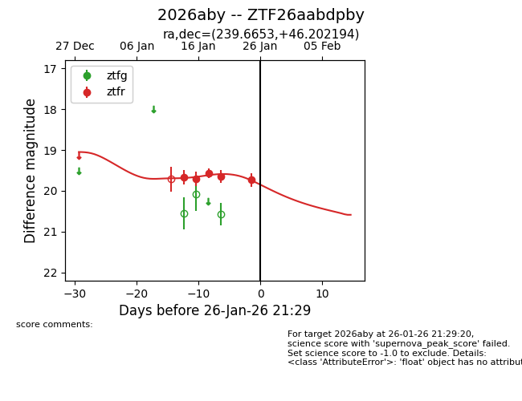
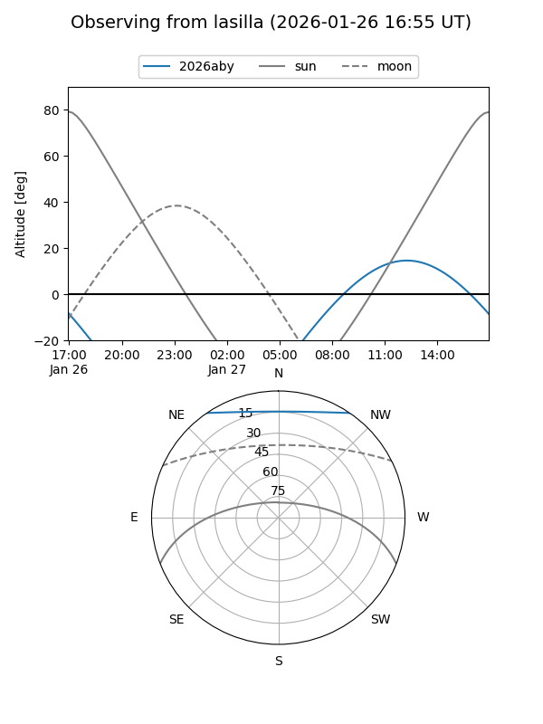
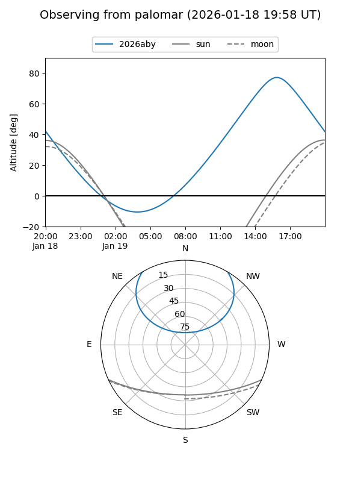
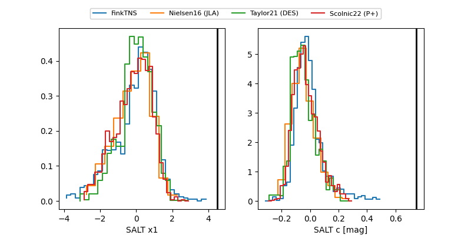

2026aby
Target 2026aby at 2026-01-18 21:16
Aliases and brokers:
FINK: link
Lasair: link
ALeRCE: link
TNS: link
YSE: link
alt names
ZTF26aabdpby (ztf,fink_ztf)
2026aby (tns,yse)
Coordinates:
equatorial (ra, dec) = 239.6653,+46.20219
equatorial (HMS+DMS) = 15:58:39.68,+46:12:07.90
galactic (l, b) = (73.1296,+48.65459)
Flags:
Photometry:
last ztfr=19.57
3 ztfr detections
Lightcurve

Visibility


Additional plots
